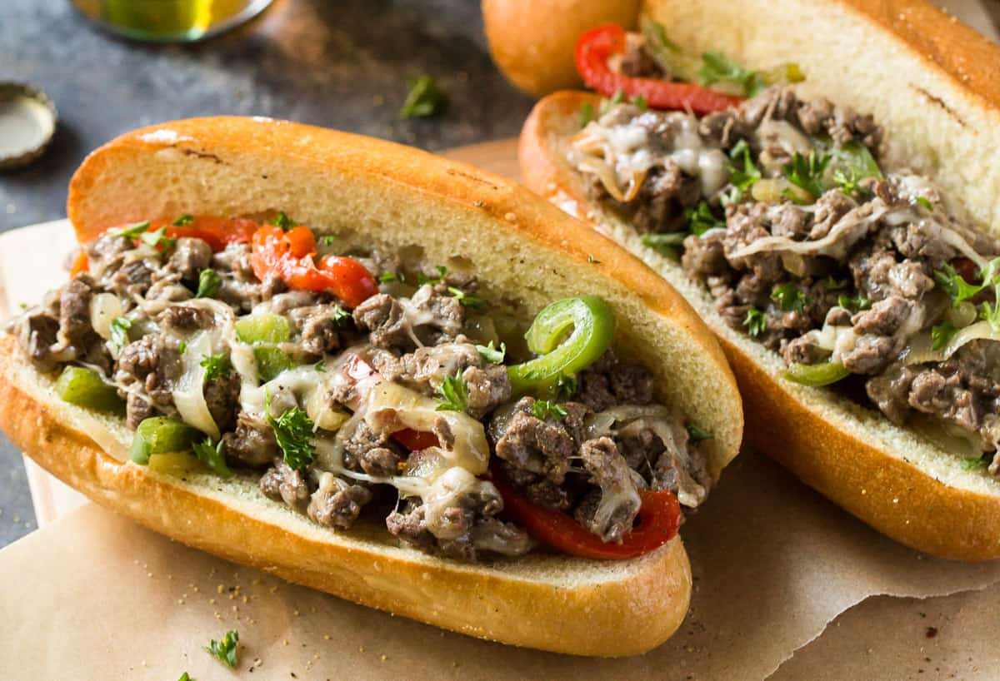

Philly Cheesesteak

Description
The Philly Cheesesteak is one of Philadelphia's greatest
claims to fame. It is a delicious sandwich that combines
thinly sliced beefsteak with cheese in a way that will
leave you wanting more. The sandwich is served in delis
all across the world and for good reason. It's a classic
deserving of its reputation.
Ingredients
- 10 to 12 ounces ribeye steak
- 1/2 teaspoon kosher salt
- 1/2 teaspoon black pepper
- 2 tablespoons olive oil, divided
- 1/2 medium sweet onion, sliced
- 1/2 green bell pepper, sliced
- 1/2 red bell pepper, sliced
- 2 ounces (3 slices) provolone cheese
- 2 hoagie rolls, toasted
- 1/4 cup Cheez Whiz, warmed
- fresh thyme, for garnish, optional
Steps
- Place steak in the freezer on a sheet pan for
about 10 minutes so it gets very cold but not
frozen through.
- Trim off any large pieces of fat normally around
the edges of the steak, but some veins of fat in
the middle of the steak are good. Then slice the
steak as thin as possible with a sharp knife. You
will not be able to get it paper thin without a
meat slicer, but slice as thin as you can. Season
steak with salt and pepper.
- In a large skillet set over medium heat, add 1
tablespoon of olive oil along with sliced onions and
peppers. Season with 1/4 teaspoon salt and pepper. Cook,
stirring occasionally, until the onions and peppers have
softened and start to caramelize around the edges, 12 to
15 minutes. Don’t rush them!
- Heat a griddle or large skillet over medium-high heat. Add
the remaining 1 tablespoon of olive oil and the sliced steak.
Spread out the steak in the skillet in a thin even layer so
it covers as much surface area as possible. Cook for a minute
or two and then stir to finish cooking the steak. It might
need another minute or two, but it will cook very quickly.
- Turn heat down to low on the steak and add the peppers and
onions to the steak mixture and stir to combine. Add the
provolone slices to the top of the steak mixture and let the
cheese melt. Stir to combine, once the cheese has melted.
- Evenly scoop the cheesesteak mixture into the toasted hoagie
rolls. The hoagie rolls should be packed! Optionally, drizzle
the cheesesteaks with warm Cheez Whiz for maximum cheesiness.
Sprinkle fresh thyme over top and serve.